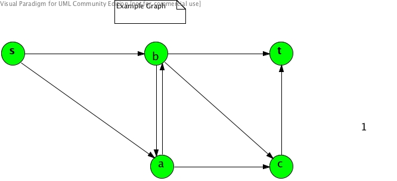

Review Exercises for Final Exam
The following exercises should help your preparations for the final exam, but
do not necessarily guarantee you will pass it.
Since answers to most of them can be found
in your class notes or the textbook, solutions will not be posted here.
1.
All questions in Assignment #3 and #4.
NP-Complete Problems and Polynomial-Time Reductions
2.
Consider the polynomial-time reduction f: φ → (Gφ, k) used to prove
3SAT ≤p VERTEX-COVER.
Prove that φ is satisfiable iff Gφ has a k-vertex cover.
3.
Consider the polynomial-time reduction used to prove 3SAT ≤p HAMPATH.
Let:
φ = (¬x1 ∨ x2 ∨ ¬x2) ∧
(x1 ∨ ¬x2 ∨ ¬x1)
Here, ¬xi is the negation of xi.
-
Give (Gφ, s, t) constructed from φ by the reduction.
-
Give one satisfying assignment A for φ, and a corresponding HAM path from s to t in Gφ
produced by the proof.
-
Give one HAM path from s to t in Gφ that is distinct from the one you gave in (b), and
give a corresponding assignment for φ produced by the proof.
4.
Consider the polynomial-time reduction from HAMPATH to UHAMPATH.
-
Give the undirected graph G' constructed from the following directed graph G:

-
Give one HAM path in G, and the corresponding UHAM path in G'.
-
Give one UHAM path in G' that is distinct from the one you gave in (b), and give the corresponding HAM path in G.
Space Complexity and Its Relation to Time Complexity
5.
Give a precise definition of worst-case space complexity functions of DTMs and NTMs that halt on all input strings.
6.
Let M be any DTM or NTM that halts on all input strings.
Prove the following:
-
WMspace(n) ≤ WMtime(n) + 1.
-
WMtime(n) ≤ (|Γ|+|Q|)WMspace(n)+1,
where Γ is the tape alphabet of M and Q is the state set of M.
Hint: Use the possible configurations of M.
7.
Prove SAT ∈ SPACE(n).
8.
Prove { A | A is an NFA that rejects at least one string } ∈ NSPACE(n).
9.
An important procedure in the proof of Savitch's Theorem is
PathN(C1, C2, t, n) that decides existence of a path
from C1 to C2 in the configuration graph of
an NTM, N, with space complexity WN(n) ≤ d·f(n).
-
Give precise specifications of the input parameters C1, C2, t, n,
and the output from the procedure.
-
Give pseudocode for the body of the procedure.
-
Show that the space requirement for running PathN(C1, C2, t, n)
is O(f(n)) × log2t.
-
Show that the length of any computation branch of N ≤ αd·f(n)+1, where
α = |Γ|+|Q|.
-
Using the PathN procedure, give a DTM equivalent to N.
-
Show that the space complexity function of the above DTM is O(f2(n)).
-
Show how to overcome the above DTM's need to compute the value of f(n).
10.
Prove NP ⊆ PSPACE = NPSPACE.
11.
-
Define PSPACE-complete problems.
-
Explain why the definition of PSPACE-complete problems uses polynomial-time reducibility
rather than polynomial-space reducibility.
12.
Describe the TQBF problem and the Formula Game problem and show that they are effectively the same problem.
13.
Describe DTMs and NTMs with a read-only input tape and how their space complexity functions are defined.
14.
Define the classes of languages L and NL.
15.
Show that { 0k1k | k ≥ 0 } ∈ L.
16.
Show that PATH ∈ NL.
17.
Describe log-space transducers.
18.
Prove:
Let M be any DTMR, NTMR, or LST using at most f(n) work-tape cells.
Then WMtime(n) ≤ n αf(n)+1 = n 2O(f(n)), where
α = |Γ|+|Q|.
19.
-
Define log-space reducibility.
-
Define NL-complete problems.
20.
Consider the proof of this theorem:
If A ≤L B and B ∈ L, then A ∈ L.
Let M be a log-space reduction transducer from A to B and MB a log-space DTMR deciding B.
-
Explain why a sequential simulation of M and MB does not yield a log-space DTMR deciding A.
-
Describe how to construct a log-space DTMR deciding A from modified M and MB.
21.
Prove the reflexivity and transitivity of ≤L.
22.
Prove:
-
If A ∈ NL-Complete and A ≤L B for B ∈ NL, then B ∈ NL-Complete.
-
If ∃B ∈ L ∩ NL-Complete, then L = NL.
23.
Prove PATH ∈ NL-Complete.
24.
Prove NL ⊆ P.
Circuit Complexity and P-Completeness
25.
Define each of the following:
-
a circuit family
-
what it means for a circuit family to decide a language over {0, 1}.
-
equivalence of two circuits
-
the size of a circuit
-
size minimality of a circuit and a circuit family
-
the size complexity of a circuit family
-
the depth of a circuit
-
depth minimality of a circuit and a circuit family
-
the depth complexity of a circuit family
-
the size and depth complexities of a language over {0, 1}
26.
-
Give a proof idea for Theorem:
If A ⊆ {0, 1}* is decided by a DTM with worst-case time complexity O(t(n)),
then A has the circuit size complexity O(t2(n)).
-
Prove that if A ∈ P, then A has a polynomial circuit size complexity.
-
Prove that if A does not have a polynomial circuit size complexity, then A ∉ P.
27.
-
Define P-complete problems.
-
Give a proof idea for CIRCUIT-VALUE ∈ P-Complete.
-
Define the processor and parallel time complexities of a circuit.
-
Define the class of languages NC.
-
Describe the evidence suggesting that P-complete problems are inherently sequential.
Approximation Algorithms
28.
-
Show that the approximation vertex-cover algorithm we studied in class has the ratio bound of 2.
-
Show that the approximation maximum-cut algorithm we studied in class has the ratio bound of 2.